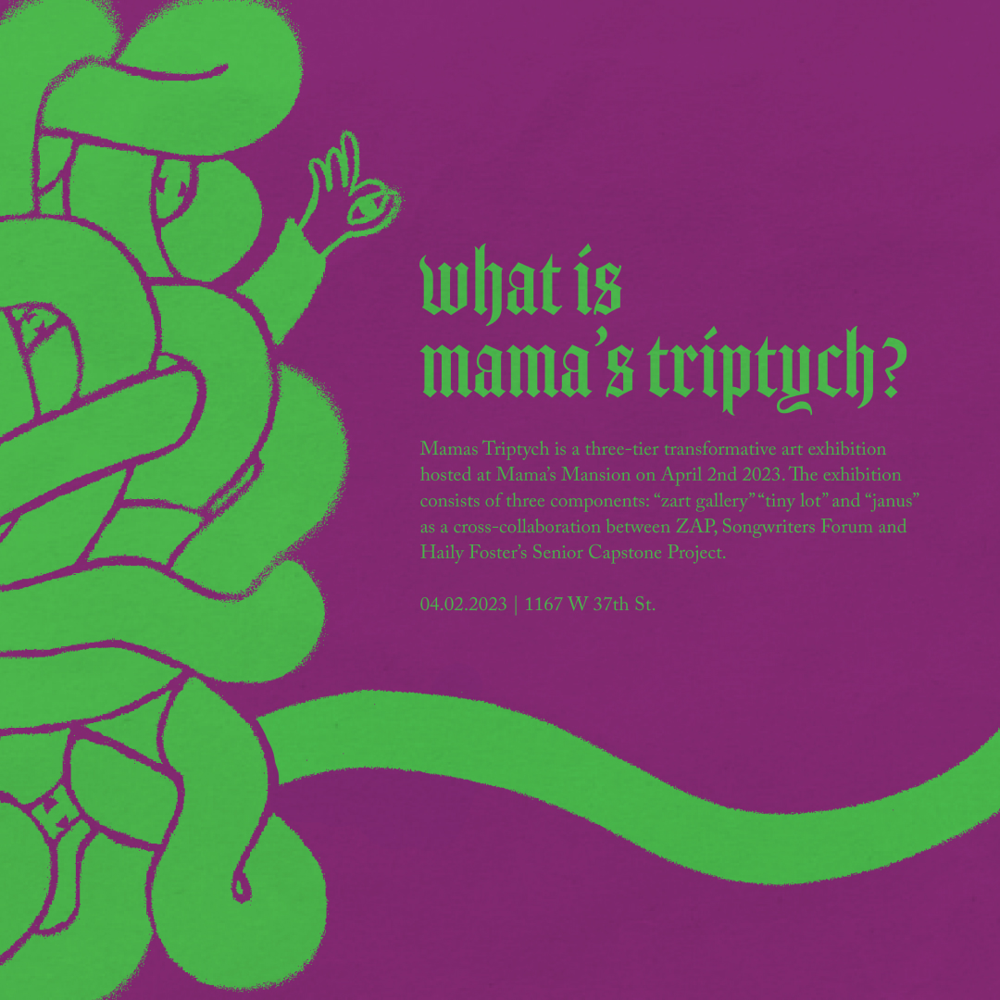
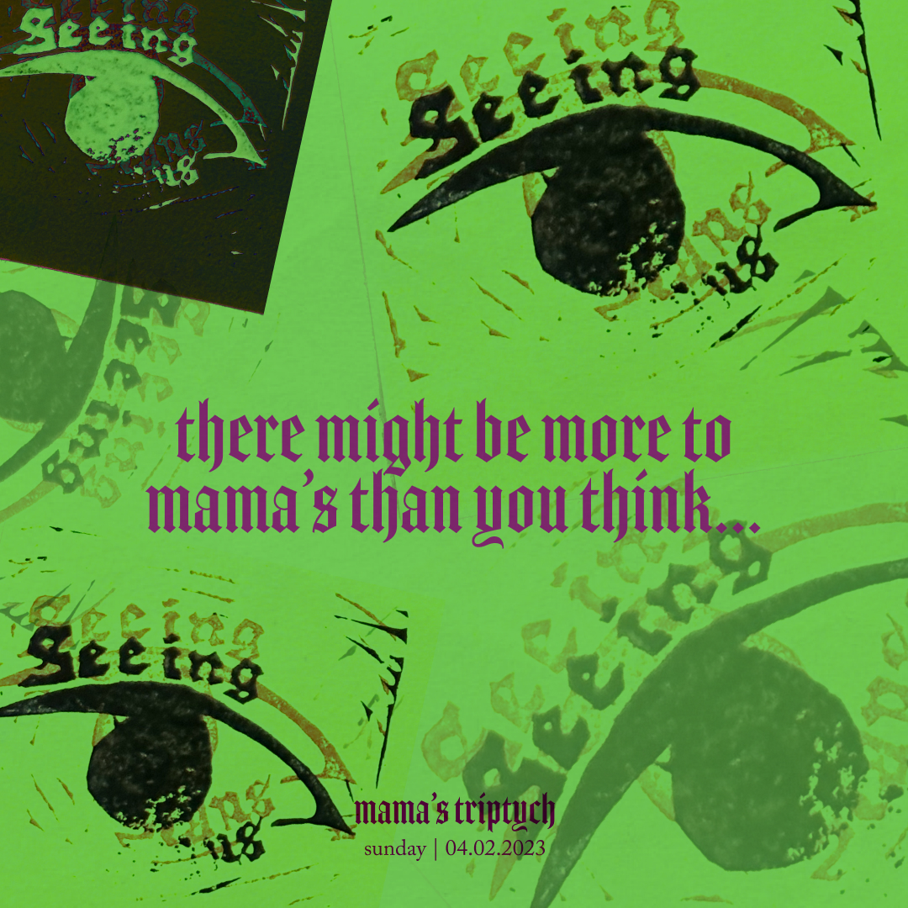
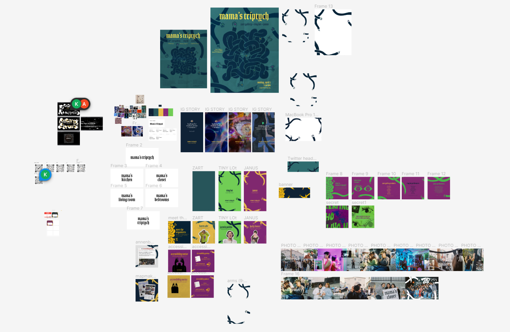
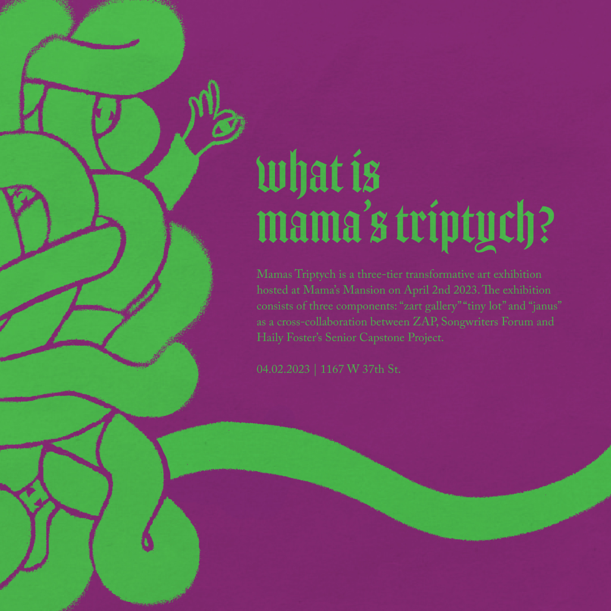
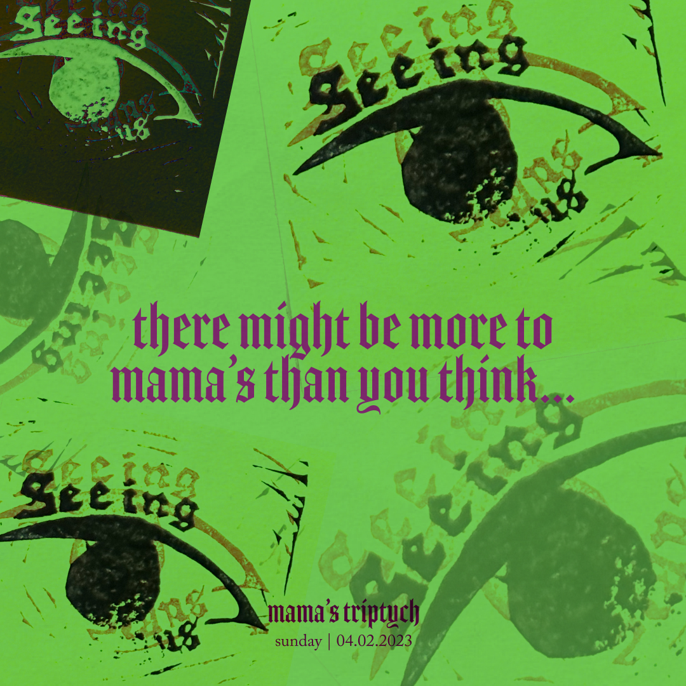
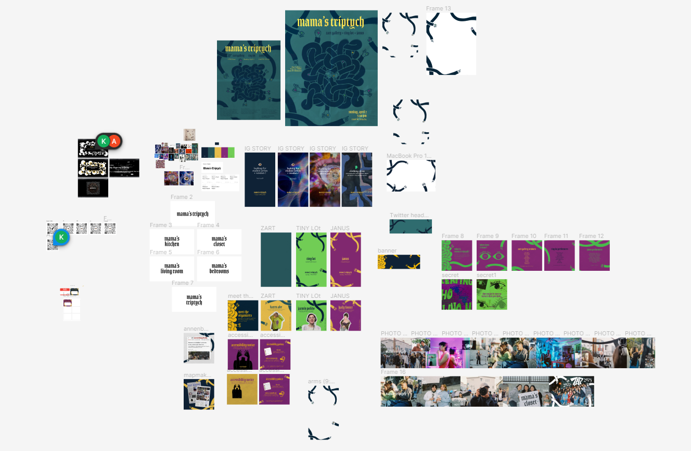
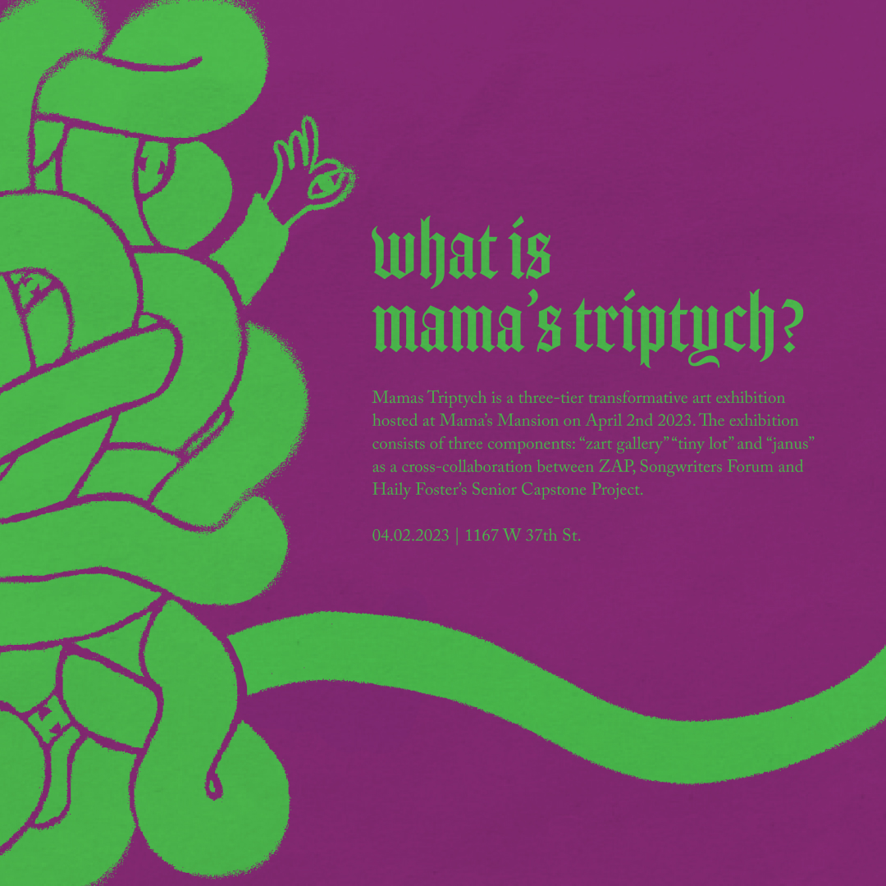
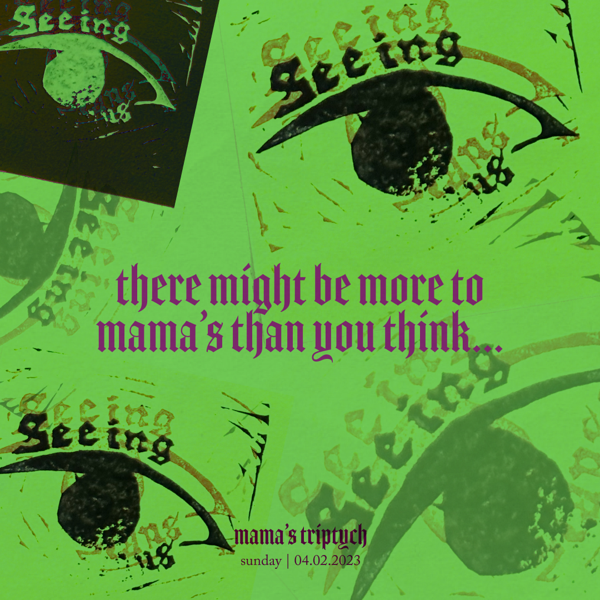
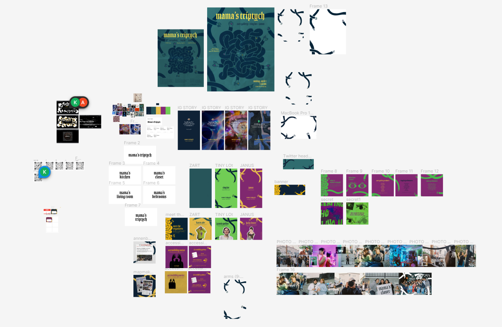

Mama's Triptych
2022
Mama's Triptych was a three-tier transformative art exhibition hosted at Mama's Mansion on April 2nd, 2023. The exhibition consisted of three components: "zart gallery" “tiny lot" and "janus" as a cross-collaboration between ZAP, Songwriters Forum and Haily Foster's Senior Capstone Project. Working alongside Karen Abe and friends, I was one of the main Art Directors for this event. We defined the visual look and experience of the event as well as its online presence.
Home page cover photo: Darcy Hatcher



Please rotate your device.